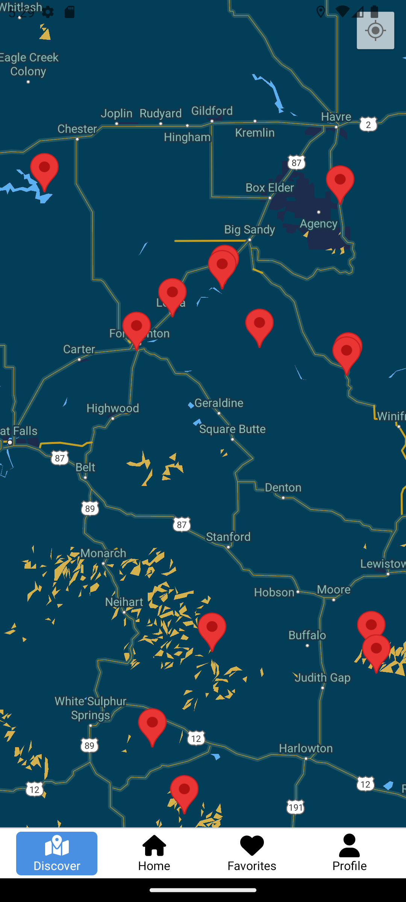

Implementation
Our main goal for the months of January to the beginning of May was to create a well-developed implementation of our product. This implementation process was broken down into early stages, main functionalities, and late stages, each encompassing key aspects of the Star Trails application development.
Early Stages
The early stages of the project implementation focused on establishing the foundation of the application:
- Requirement Specification: Finalized the list of requirements to ensure clarity on what features and functionalities would be included in the final product.
- Systems Modeling and Storyboarding: Created system diagrams and storyboards to visualize the user flow and system architecture.
- Prototype Development: Developed a high-fidelity prototype using Figma to represent the UI/UX design of the application.
- Initial Firebase Setup: Configured Firebase for authentication, Firestore, and storage functionalities.
- Environment Setup: Set up the project environment using React Native Expo and connected it to Firebase services.
Main Functionalities Added
During the main development phase, we implemented core features of the Star Trails application:
- User Authentication: Implemented secure user sign-up, login, and logout functionalities using Firebase Authentication.
- Site Management: Developed the site management feature, allowing users to view and bookmark stargazing sites.
- Site Details and Amenities: Enabled users to view detailed information about sites, including amenities, weather forecasts, and light pollution data.
- Celestial Events Calendar: Integrated an events calendar for upcoming meteor showers, lunar eclipses, and other celestial phenomena.
- Comment and Photo Sharing: Allowed users to leave comments and share photos of stargazing sites.
- Notification System: Added a notification system to remind users of upcoming celestial events and saved site visits.
- Map View: Created an interactive map to visualize stargazing sites and nearby amenities.
- Profile Management: Enabled users to manage their profiles, including updating profile pictures and viewing bookmarked sites.
Late Stages
The late stages focused on refining the implementation through rigorous testing and incorporating feedback:
- User Interface Testing: Conducted user interface testing to identify areas for improvement in the UI/UX design.
- Code Reviews: Organized code reviews to ensure consistency, readability, and adherence to coding standards across the codebase.
- Functional Testing: Developed comprehensive test cases to verify the app's features and fix bugs or issues encountered during testing.
- Performance Optimization: Optimized the app's performance by reducing delays, improving navigation speed, and enhancing loading times.
- Final Feedback Incorporation: Collected and incorporated feedback from stakeholders and users into the final product to improve the overall user experience.
- Deployment Preparation: Prepared the application for deployment on the Google Play Store, including finalizing the privacy policy and terms of service.
Final Product
The following screenshots showcase the final implementation of the Star Trails app and its core features:
Login Screen: Provides secure sign-up and login functionalities for users using Firebase Authentication.
Site Management: Allows users to view and bookmark stargazing sites, complete with detailed information and amenities.
Celestial Events Calendar: Displays upcoming meteor showers and other celestial phenomena, helping users plan their trips.
Map View: An interactive map showcasing stargazing sites and nearby amenities.
Profile Management: Enables users to update profile pictures, manage their profiles, and view bookmarked sites.
Comments and Weather: Allows users to leave comments and share photos of stargazing sites.
Light Pollution Map: An interactive map that shows all the light pollution in Montana so users can plan an optimal night sky experience.